揭開醫療接頭的「救命鎖」：ISO 80369-7 與 ISO 80369-20 通俗全解
把話說透：醫院裡的管子是怎麼靠「長得不一樣、想插錯都插不進」，默默守護我們每一次輸液的安全？
💡 醫療界的 Type-C 與專用插頭革命
如果高壓烤箱電線、瓦斯管與飲水機水龍頭共用同一種接頭，隨便就能互插，這有多致命？過去幾十年醫院裡的管子就真的長得一模一樣！ISO 80369 國際標準化革命，就是要從物理幾何形狀上徹底杜絕插錯通道的可能。
• 專屬臨床門類：專門管血管內 (IV) 與皮下注射接頭
• 鎖定驗收門檻：明定正壓防漏、抗拉脫等 6 大合格標準
• 規範裝配動作：嚴格依附錄 SOP 施加 26.5~27.5 N 軸向推力與 0.08~0.12 N·m 旋緊扭矩
• 全系列通用手法：全球醫用接口公認的量測標準（-2~-7 通用）
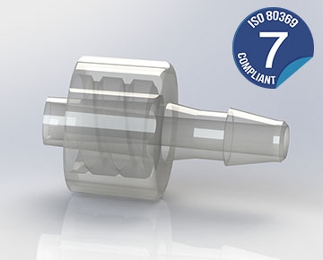
• 右旋保護螺套：順時針輕轉即鎖死，防拉扯脫落
• 倒鉤軟管口：緊咬輸液軟管，滴水不漏超安心
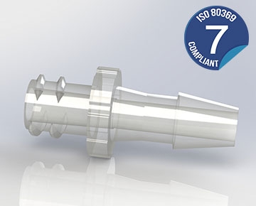
• 6% 內錐孔：深度 ≥ 7.5mm，推進即可吻合
• 冷壓自然密封：不用任何橡皮圈也能滴水不漏
一秒鐘的看花眼，代價是一條生命：為什麼管子長太像會要命？
夜深人靜、護理師連續忙了十幾個小時，只靠眼睛在暗處分辨透明軟管，誰也保證不了萬無一失
⚠️ 病房裡真實發生過的驚險瞬間
-
1血管打點滴（IV）：管子直接連著心臟和大腦血液，只能進清澈乾淨的生理食鹽水或無菌藥物。
-
2腸胃餵食管（Enteral）：管子裡打的是濃稠的營養奶粉、流質食物，是直接送進肚子消化的。
-
3要是兩根管子長得一樣：疲憊不堪的夜班護理師一旦在昏暗中看花眼，把濃稠的牛奶誤插進點滴管，濃稠的奶糜會瞬間阻塞肺部微血管，幾分鐘內病患就會窒息危及性命！
❌ 常聽人說：「叫護理師多注意、多貼幾張貼紙不就好了？」
答案是：真的不夠！
墨菲定律告訴我們：只要客觀上還插得進去，哪怕十萬次裡只有一次疏忽，在全世界每年幾十億次的輸液操作中，悲劇就一定會發生。
「護理師也是肉身凡胎，不要考驗人疲憊的極限；讓實體形狀替我們把好這道關！」 這就是標準發起改革最根本的初衷。
當年太偉大的發明，為什麼成了全院的互穿地雷？傳統魯爾接頭的泛濫
百年前發明的 6% 斜角實在太好用了，結果所有廠商全都拿去用，最後亂成了一鍋粥
🎩 魯爾工程師的錐度發明
1890s 摩擦錐度自鎖130年前，德國儀器製造者魯爾採用了精妙的錐度配合幾何：把接頭做成 6% 的微小斜角（每前進 1 公分粗細只差 0.6 毫米）。兩截塑料或玻璃輕輕推入旋緊，不用橡皮圈，靠塑料表面本身的均勻貼合就能做到滴水不漏，連極細的針筒都不滲水！
💣 「太好用」引發的跨科室大亂套
全院通配大隱患因為這個設計太便宜、太好拔插，後續幾十年間，量血壓的、吸氧氣的、肚子餵飯的、背後打麻藥的，全院上下所有醫療器材廠商，全圖省事拿這款接頭來用，完全沒留安全退路！
🔓 萬能鑰匙的危險：當所有門都共用同一把鎖
這下壞了：醫院裡幾十種打進不同身體部位的液體和氣體，全連成了同一種接口。
形象比喻：就像全世界的防盜門、瓦斯閥門、自行車鎖，全部共用同一款扁平小鑰匙。看似方便到了極致，安全卻徹底歸零！
讓形狀自己把關：ISO 80369 家族如何用物理尺寸杜絕致命錯接？
粗的太胖塞不進、細的太鬆會漏水，就算閉著眼睛，也休想插錯任何一根管子！
ISO 80369-7 血管靜脈點滴
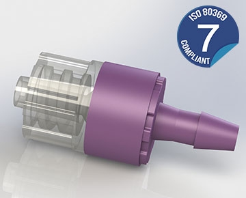
• 標準 6% 錐度：外錐基底 Ø3.97mm，削筆尖般順滑吻合
• 雙耳朵螺旋卡榫：順時針轉一圈牢牢咬死，防甩防脫
• 守護心臟血液：直通大血管，絕不容許半點雜質或錯接
ISO 80369-3 腸胃餵食管
• 大了一整圈：口徑比打點滴接頭粗了 35%，根本塞不進去！
• 螺牙故意反向裝：連轉緊的卡榫都完全不對盤，休想瞎撞旋上
• 絕對防呆：營養奶水只准進腸胃，永遠不可能誤入血管！
ISO 80369-6 神經麻醉管
• 細脖子加保護圈：直徑縮小 20%，附帶專屬隔離擋環
• 碰在一起只會漏：細頭碰粗孔只會晃盪漏水，根本吸不上也鎖不緊
• 守護脆弱脊髓：把麻醉藥路徑單獨封閉，絕不跟點滴混淆
🛡️ 本質防呆：不考驗醫護疲倦的雙眼，把安全直接刻進塑膠骨子裡
全家族 6 大分工國際標準最動人的善意：「別讓人去猜，讓管子自己拒絕插錯」。整座醫院裡的各路管子被分得清清楚楚、互不干擾：
呼吸給氧 (大口徑)
腸胃喝奶 (專用粗管)
量血壓氣囊 (專用插座)
脊椎麻醉 (微細專管)
血管打點滴 (6%斜角)
嚴格公平考場 (通用測試)
接頭型態的 MECE 完整圖鑑：L1 滑套型 vs L2 帶鎖型的雙軸設計
ISO 80369-7 法定四大基本型態：幾何極性（公 Male / 母 Female）× 鎖定機制（滑套 Slip / 帶鎖 Lock）完全窮盡
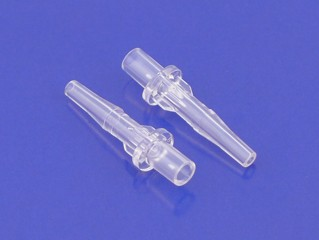
• 冷壓摩擦自鎖密封：推進母孔產生微彈性擠壓，無橡皮圈也滴水不漏
• 凱益醫療級規格：I.D. 4.1mm / 醫用 ABS / 軸向拉拔保持力達 23~25 N
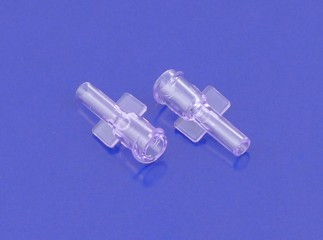
• 6% 內孔精準密封：孔深 ≥ 7.5mm，推進即可吻合緊密
• 凱益醫療級規格：I.D. 2.7mm / 廣泛適配靜脈留置針與各類藥液通路
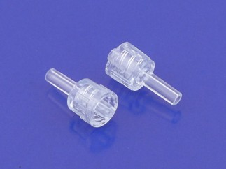
• 嚴苛法規三大指標：拉脫力 32~35 N、抗自鬆 0.02 N·m、抗滑牙 0.17 N·m
• 凱益醫療級規格：I.D. 2.0mm / 承載 300 kPa 正壓防噴射，重症點滴首選
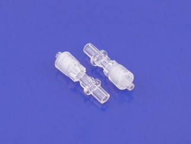
• 臨床護理極致體驗：狹窄空間單手順暢上鎖，徹底消除管路拉扯應力
• 凱益醫療級規格：I.D. 2.79mm / 高精度雙件式組裝，高階輸液延長管標配
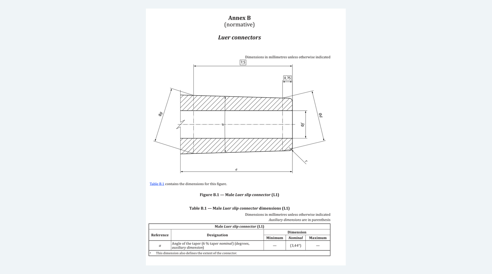
公滑套尺寸精髓 (圖 B.1)： 6% 外斜角錐頭（底徑 Ø3.97mm），無外螺紋套環，純靠冷壓摩擦緊固。
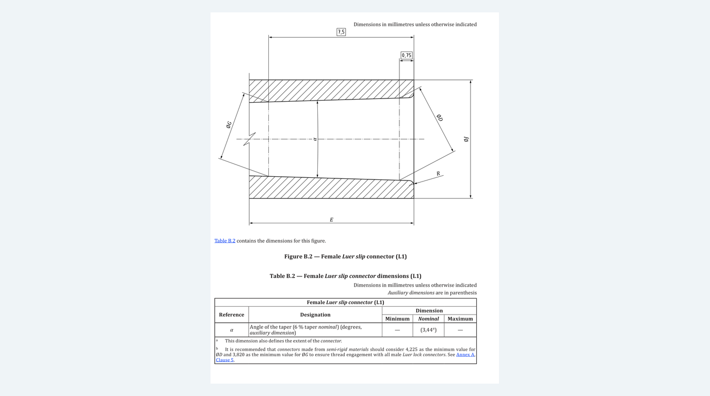
母滑套尺寸精髓 (圖 B.2)： 6% 內孔深 ≥ 7.5mm，筒身平滑無凸耳，插到底形成均勻環狀密封面。
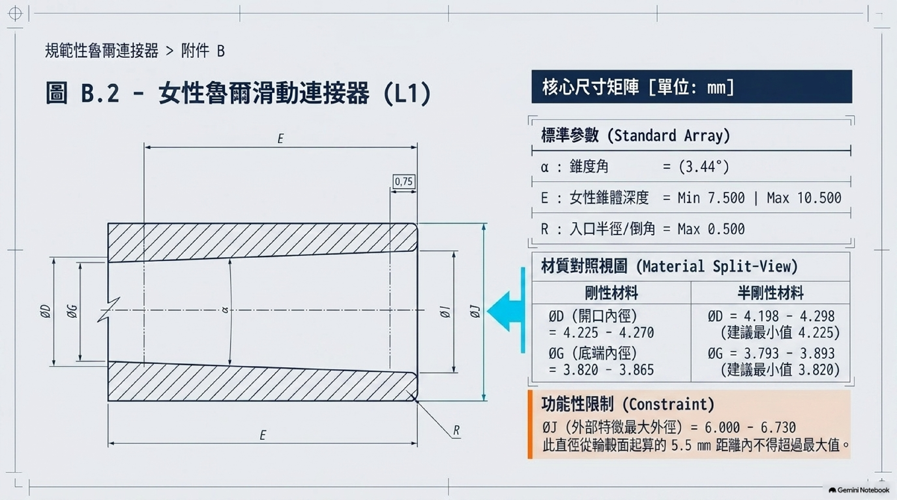
公鎖定尺寸精髓 (圖 B.3/B.4)： 錐長 7.5~10.5mm，內雙螺旋螺紋，支持固定套環與旋轉套環。
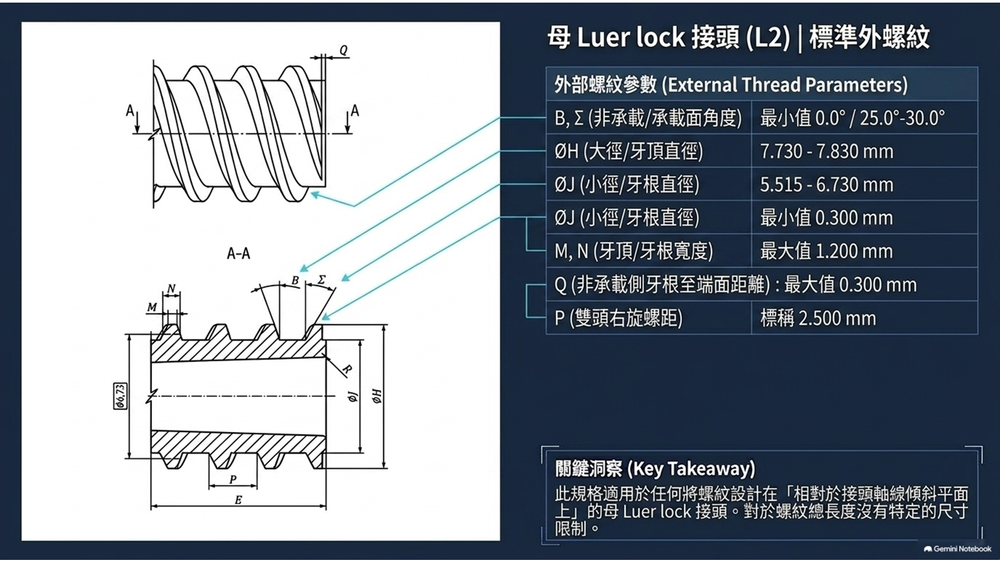
母雙耳尺寸精髓 (圖 B.6)： 兩側直角小耳朵寬度 Y ≥ 2.71mm，旋轉 90° 緊扣公螺牙防滑脫。
🔍 L1 滑套型：為什麼不用螺紋也能滴水不漏？（6% 斜角摩擦自鎖）
純物理摩擦密封： 6% 斜角（每前進 1 公分，直徑只縮小 0.6 毫米）是機械摩擦自鎖的黃金角度。當公母兩顆接頭輕輕一推，光滑塑料表面在微觀上產生微小彈性抱死咬合，水分子根本鑽不過去！法規要求其軸向拉脫力必須達到 23~25 N。
🔒 L2 帶鎖型：為什麼重症輸液必須升級帶鎖？（雙耳與螺紋雙保險）
機械防脫進化： 在 6% 錐度基礎上，公頭外加保護螺套、母頭長出兩隻直角小耳朵（弦長 Y ≥ 2.71mm）。旋轉 90 度卡入螺牙死鎖，不僅拉拔力大幅飆升至 32~35 N，更強制通過抗自鬆（0.02 N·m）與抗滑牙（0.17 N·m）考核，病人夜間翻身也扯不開！
一秒搞懂 -7 與 -20 的分工：三個接地氣的日常好比喻
為什麼要分成兩本書？「出考題的設計師」與「鐵面無私的考官」如何默契合作？
🚗 舉例一：考駕照手冊 vs 監理站考場
規定「你開的必須是自小客車，倒車入庫輪胎不能壓黃線，必須在 30 秒內倒進去（及格標準）」。
不管今天誰來應考，它專門提供「地上的紅外線感應壓線條、標準雷達測速儀、統一扣分電腦（公正的測試方法）」。
沒有 -7，考官不知道該考誰；沒有 -20，設計圖只是紙上吹牛。兩本書牽手，才有了全世界一致認可的救命標準！
🛡️ 舉例二：汽車安全撞擊測試 (NCAP)
工業界大考
• ISO 80369-7（造車標準）：規定「保險桿鋼材有多厚、時速 50 公里撞擊時車內假人受傷數值不能超標」。
• ISO 80369-20（撞擊實驗室）：規定「牽引鋼索用什麼速度拉、假人身上 40 個感應器怎麼校準、高速攝影機用多少幀率記錄」。
🏥 舉例三：醫療器材工程師的「兩本合參」日常
研發到確效
• 左手翻開 ISO 80369-7（設計規格）：畫出微米級公差與防呆幾何，定下「耐受 35 N 軸向拉力與 330 kPa 水壓」的及格標準。
• 右手翻開 ISO 80369-20（試驗手法）：採購 Annex C 不鏽鋼標準件，依 SOP 精確施加 26.5~27.5 N 軸向推力與 0.08~0.12 N·m 旋緊扭矩，驗證極限性能！
• 兩本合璧完成確效 (DVP)：不論自主測試或官方審查，唯有同時滿足兩本標準，才能為病床送上零插錯的安心保障。
聰明省錢的巧思：-20 這套公認的嚴格考場（Annex B 到 L），不僅考 Part 7 血管接頭，連 Part 3 胃管、Part 6 麻醉管都一起用它考，全世界不用為每種管子重複買昂貴的實驗儀器！
第一道大關：連「用多大力氣擰緊」都得定規矩，為什麼？
如果插接頭的手勁全憑心情，那測出來的數據全都是不可信的偽科學
⚙️ ISO 80369-20 定下的標準裝配程序 (SOP)
| 裝配參數 | 規範定量標準 | 通俗生活對照與測試目的 |
|---|---|---|
| 軸向推力 (Axial Force) | 26.5 N ～ 27.5 N | 模擬成年人單手用力推進去的手勁（約 2.7 公斤推力） |
| 裝配扭矩 (Assembly Torque) | 0.08 N·m ～ 0.12 N·m | 大拇指與食指順暢擰到底的舒適力氣（轉動 ≤ 90° 即止） |
| 保載時間 (Hold Time) | 5 秒 ～ 6 秒 | 以標準推力與扭矩同步保持 5~6 秒，使錐面充分吻合穩定 |
🔩 ISO 80369-7 附錄 C 金屬標準件：絕不拿塑膠跟塑膠互測！
測試塑膠接頭時，絕對不能拿另一個塑膠接頭去互配！
因為兩塊軟塑膠碰在一起會互相遷就變形，把尺寸瑕疵悄悄掩蓋。標準強制要求使用 ISO 80369-7 Annex C 高硬度不鏽鋼參考連接器 進行最嚴苛大考：
-
C.1/C.2圖 C.1 / C.2 鋼製公頭：鏡面光滑的高硬度不鏽鋼基準件，一微米的注塑尺寸偏差都休想矇混過關。
-
C.3圖 C.3 嚴苛鋼製母座：將凸耳弦長刻意做成極限窄的 2.71 mm（公差 ±0.03 mm），專門考驗公接頭螺牙會不會在極限公差下扯崩滑脫！
🎯 第一性原理：「先統一考生的起跑線，成績才算數」。如果測試時有人施力過輕、有人過度重壓，那檢驗報告就是一張廢紙。ISO 80369-20 在進行任何洩漏或力學測試前，強制統一這套 26.5~27.5 N 軸向推力 + 0.08~0.12 N·m 旋緊扭矩 + 5~6 秒的裝配基準。
大考之一：頂得住汽車輪胎的高壓，抽真空也休想吸進半個氣泡
高壓防爆裂噴濺、深真空防致命氣栓：看似簡單的兩項測試，背後關乎生死一線
💧 條文 6.1 正壓防洩漏測試（液體落滴法 / 氣壓衰減法）
ISO 80369-20 附錄 B / C| 測試目的 | 推注黏稠顯影劑或用輸液幫浦加壓給藥時，接口絕不能爆脫滲漏。 |
| 加壓條件 | 充水或加壓空氣至 300 kPa ～ 330 kPa（約 3 個大氣壓，超過汽車輪胎胎壓！）。 |
| 試驗時間 |
• 液體落滴法 (6.1.3)：持壓 30 s ～ 35 s • 氣壓衰減法 (6.1.2)：持壓 15 s ～ 20 s |
| 及格標準 |
• 液體法：零落滴（試驗期間不得形成足以脫落之水滴） • 氣壓法：洩漏率 ≤ 0.005 Pa·m³/s |
💨 條文 6.2 負壓抽真空防氣泡測試（次大氣壓空氣洩漏）
ISO 80369-20 附錄 D| 測試目的 | 抽血回抽或負壓引流時，外界空氣絕不能沿著接縫被吸入血管。 |
| 抽氣條件 | 真空系統穩定抽取至低於大氣壓 80.0 kPa ～ 88.0 kPa 之深度負壓。 |
| 試驗時間 | 連續維持負壓抽氣達 15 秒 ～ 20 秒。 |
| 及格標準 | 氣體洩漏率 ≤ 0.005 Pa·m³/s（空氣絕不允許沿錐面吸入！）。 |
🚨 為什麼抽真空漏氣，比漏水可怕一百倍？
藥水若漏出來，頂多弄濕床單衣服；但若負壓時微量漏氣，只要吸進微小氣泡進入靜脈，氣體便會直衝右心房與肺動脈，造成致命的空氣栓塞（Air Embolism），病患恐在極短時間內呼吸窘迫！因此 ISO 80369-7 將負壓洩漏率嚴格限制在 ≤ 0.005 Pa·m³/s。
大考之二：病人翻身扯不脫、管路震動不鬆開、情急大力擰不壞
用真金白銀的力學試驗機檢驗：軸向拉拔、反向旋開、過載扭轉三大機械性能測試
🧗 6.4 軸向負載拉拔試驗（抗拉脫）
| 拉力考驗 |
• 滑套 (Slip)：23 N ～ 25 N • 帶鎖 (Lock)：32 N ～ 35 N |
| 加載速率 | 約 10 N/s 勻速加載，不准猛扯 |
| 維持時間 | 持續承受軸向拉力 10s ～ 15s |
| 及格標準 | 試樣與標準件不得分離 (No separation)。 |
臨床情境：病患翻身拉扯、轉床移位時輸液管路被意外牽拉，接頭必須緊扣不脫！
🔄 6.5 旋開分離抵抗試驗（抗意外鬆脫）
| 反向扭矩 | 施加 0.018～0.020 N·m 逆向旋鬆微力 |
| 測試狀態 | 軸向力 = 0 N（純扭矩旋轉、不給外拉力） |
| 維持時間 | 持續反向扭轉施加 10s ～ 15s |
| 及格標準 | 連接器不得完全旋開分離。 |
臨床情境：管路隨著病患呼吸、輸液推車走動顛簸震動時，不能因微震自行逆向解鎖。
💪 6.6 抗滑牙與過載破壞試驗
| 過載扭矩 | 施加 0.15～0.17 N·m（正常值約 1.7 倍！） |
| 考驗條件 | 鋼製 C.3 窄耳翼（2.71 mm 極限窄） |
| 維持時間 | 超負荷旋緊並維持 5s ～ 10s |
| 及格標準 | 螺牙不得越扣滑脫，無軸線歪斜 (No cocking)。 |
臨床情境：急救情急之下雙手大力旋緊，塑料套環不爆裂、螺紋與耳朵絕不滑牙！
大考之三：組裝後緊繃靜置 ≥ 48 小時耐應力龜裂，條文 5 三維幾何物理防呆互斥！
時間軸上的材料蠕變耐受、空間軸上的微米幾何天塹：全方位驗證接頭的長期穩定與物理互斥
🧪 條文 6.3 耐應力龜裂試驗（組裝緊繃靜置 ≥ 48h）
塑膠接頭在旋緊組裝後，材料內部會長期處於環向拉伸應力之下。若塑料配方不穩定或殘留內應力過大，隨時間推移極易發生微觀龜裂，導致數天後在病房無故漏液！
| 組裝前置 | 依 ISO 80369-20 附錄 E，以標準力矩 (0.08~0.12 N·m) 與推力 (26.5~27.5 N) 乾燥組裝於 Annex C 金屬標準件。 |
| 環境儲存 | 置於實驗室環境條件（溫度 15°C ～ 30°C，相對濕度 10% ～ 70%），緊繃靜置不少於整整 48 小時！ |
| 嚴苛終檢 | 靜置 48 小時後，嚴禁重新調整或補鎖，直接原地執行 6.1 正壓防漏測試，判定仍須完全合格！ |
🛡️ 條文 5 非互換性幾何防呆（三維 CAD 空間互斥驗證）
真正的防呆無需動用外力強插，而是依據 ISO 80369-7 條文 5 與附錄 A，在工程圖紙階段就以微米級幾何尺寸築起無法逾越的防線：
| 互斥對象 | 全系列不同醫療應用接口（Part 2 呼吸、Part 3 腸胃 ENFit、Part 5 肢體袖帶、Part 6 神經 NRFit）。 |
| 驗證手段 | 三維 CAD 空間干涉分析（Dimensional Analysis），比對彼此最大與最小實體極限尺寸 (Worst-case)。 |
| 及格標準 | 絕對無法連通 (Shall not connect)！任何軸向或旋轉角度下，圓錐均無法深入對接、螺牙無法咬合，流道完全不密封。 |
測試哲學：時間上耐得住 48 小時預緊應力的嚴苛考驗，空間上守得住條文 5 的三維防呆天塹，這才是值得信賴的醫療安全！
一根救命管子的誕生旅程：從一張工程圖紙，到病床邊的踏實安心
這兩本標準是怎麼串起開模工廠、檢驗所、監管部門，最後把安全送到每個人身邊的？
看著 ISO 80369-7 設計
• 輸入精確到 0.01mm 的 6% 斜角尺寸
• 雕琢雙螺旋鎖定螺牙與防脫耳翼
• 高純度醫療級 PP/PC 塑膠精密注塑
接受 ISO 80369-20 大考
• 送進檢驗所，以 Annex C 金屬件受試
• 扛過 330 kPa 正壓防漏與 88 kPa 抽真空
• 經受 35 N 軸向拉力，耐受 48h 緊繃靜置
各國監管單位點頭放行
• 拿出符合 -20 規範的公正檢驗報告
• 美國 FDA、歐盟 CE、台灣 TFDA 全面互認
• 取得正式醫療器材上市許可證書
走進病房守護每次輸液
• 批量生產走進全球醫院（公鎖、母座、歧管）
• 護理師閉著眼睛也插不進錯誤管道
• 默默守護無數患者打點滴的安全防線
🏥 第一線護理師：心裡踏實、零焦慮
上大夜班身心俱疲時，再也不必瞇著眼睛在幾條透明管子裡提心吊膽猜來猜去；尺寸形狀天生互斥，想插錯都插不進，心裡踏實不慌張。
🏭 醫療器材工廠：走出國門、暢行全球
工廠依 -7 標準公差開模，無論是歐美留置針還是日本輸液幫浦，一插就合、完全通配，不需要為每個國家單獨修改昂貴模具。
📜 衛生監管部門：一把尺量到底、公道透明
各國審批官員不聽花言巧語，只看有沒有依 -20 規範在實驗室如實加壓受試；全世界用同一把公正的物理尺量到底，審查透明、科學明白。
小小塑膠接頭，天大救命工程：把安全刻在形狀裡的極致溫柔
真正的安全，從來不寄望於『每個人永遠不粗心』，而是讓設計本身永遠擋住意外
💡 帶走這三句大白話，完整理解醫療防呆標準的核心精神
精華濃縮與其要求忙碌疲憊的醫護人員永不看走眼，不如讓管子自己長得不一樣：大的插不進小的，細的碰在一起漏水，從形狀源頭把粗心的通道徹底堵死。
它規定血管管子該長多長、斜角是幾度、要能承受幾公斤拉力和多少水壓，給全球開模工廠指明方向。
它不規定尺寸，專門制定全天下統一的測驗手勁、儀器接法與鋼鐵夾具，不管是誰來考，規矩都一模一樣。